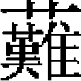
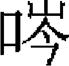

地理志六
湖廣等處行中書省，領路三十二、府二、州十三、安撫司十五、軍三、屬州十五、屬縣一百四十二。蠻夷土官府州縣等，不在此數。
江南湖北道肅政廉訪司
武昌路。上。宋鄂州，屬荆州北路。至元十一年，歸附，置安撫司。十四年，置湖北宣慰司，改安撫司爲鄂州路總管府。十八年，移宣慰司於潭州。十九年，本路直隸行省。大德五年，以鄂州爲世祖親征之地，改武昌路。户一十一萬四千六百三十二，口六十一萬七千一百一十八。至元二十七年抄籍數。領司一：録事司。至元十三年置。縣七：江夏。中。倚郭。咸寧。下。嘉魚。下。蒲圻。中。崇陽。中。通城。中。武昌。下。宋武昌縣，升爲壽昌軍，後復爲縣，又再爲軍。至元十四年，升散府。大德五年，裁府，仍改縣爲武昌。
岳州路。上。宋岳州，屬荆湖北路。至元十三年，升岳州路總管府。舊領巴陵、華容、平江、臨湘四縣。元貞元年，升平江爲州。户一十三萬七千五百八，口七十八萬七千七百四十三。領司一：録事司。縣三：巴陵。上。倚郭。臨湘。中。華容。中。
州一：
平江州。下。宋平江縣。元貞元年，升平江縣。
常德路。上。宋常德府，屬荆湖北路。至元十二年，置安撫司。十四年，改常德路總管府。十五年，置荆湖北道宣慰司於本路，未幾罷。舊領武陵、桃源、龍陽、沅江四縣。元貞元年，升桃源、龍陽爲州，又析沅江縣隸龍陽。户二十萬六千四百二十五，口一百二萬六千四百二。領司一：録事司。縣一：武陵。上。
州二：
桃源州。中。宋桃源縣。元貞元年，升爲州。
龍陽州。下。宋龍陽縣，改辰陽，又復舊。元貞元年，升爲州。領縣一：沅江。下。
澧州路。上。宋澧州，屬荆湖北路。至元十四年，置安撫司。十四年，改澧州路總管府。延祐三年，又改爲安定軍民府。舊領澧陽、安鄉、石門、慈利四縣。元貞元年，升慈利爲州。户一十萬九千九百八十九，口一百一十一萬一千五百四十三。領司一：録事司。縣三：澧陽。上。倚郭。至正十六年，倪文俊陷澧陽，元帥孫毅遷縣治於新城。石門。上。安鄉。下。
州一：
慈利州。中。宋慈利縣。元貞元年，升爲州。
土州二：
安定州。
柿溪州。
辰州路。下。宋辰州，屬荆湖北路。至元十四年，升辰州路總管府。户八萬三千二百二十三，口一十一萬五千九百四十五。領縣四：沅陵。中。辰溪。下。盧溪。下。叙浦。下。
土州二：
上溪州。
施容州。二州皆溪洞地，元初置。
沅州路。下。宋沅州，屬荆湖北路。至元十二年，置沅州安撫司。元貞元年，升沅州路總管府。户四萬八千六百三十二，口七萬九千五百四十五。領縣三：盧陽。下。黔陽。下。麻陽。下。
興國路。下。宋興國軍，屬江南西路。至元十四年，升爲興國路總管府。舊隸江西行省。至元三十年，改隸湖廣。户五萬九百五十二，口四十萬七千六百一十六。領司一：録事司。至元十七年置。縣三：永興。下。倚郭。大冶。下。通山。下。
漢陽府。下。宋漢陽軍，屬荆湖北路。至元十年，宋守將王儀以城降。十四年，升爲府。至元二十九年，割湖廣省之漢陽隸河南省。其還隸本省年分闕。户一萬四千四百九十二，口四萬八百六十六。領縣二：漢陽。至元二十年。升中縣。有陽羅堡。至元十六年，改隸鄂州路。尋復舊。
漢川。下。舊治大赤，至正二十二年，移治長城鄉。《翰墨全書》：漢陽、漢川二縣，俱隸岳州路。至元十二年，取岳州；十四年，已置漢陽府，不容隸岳州爲縣。今不取。
歸州。下。宋故州，屬荆湖北路。至元十二年，置安撫司。十四年，升歸州路總管府。十六年，降爲州。至正十五年，改隸四川行省。户七千四百九十二，口一萬九百六十四。領縣三：秭歸。下。倚郭。巴東。下。興山。下。
靖州路。下。宋靖州，屬荆湖北路。至元十二年，置安撫司。元貞元年，沅州升爲路，以靖州隸之。延祐四年，升靖州路總管府。後至元四年，以湖廣行省元領新化洞、古州、潭溪、龍里、洪州諸洞來屬。九年，罷總管府，改立靖州軍民安撫司。户二萬六千五百九十四，口六萬五千九百五十五。領縣三：永平。下。會同。下。通道。下。
湖南道宣慰司都元帥府至元十五年，置治衡州。十八年，移治潭州。至正十年，以宣慰使司兼都元帥府。
嶺北湖南道肅政廉訪司
天臨路。下。宋潭州，屬荆湖南路。至元十三年，置安撫司。十四年，改潭州路總管府。十六年，遷行省於鄂州，湖南道宣慰司治潭州。天曆二年，以潛邸所幸，改天臨路。舊領長沙、湘潭、益陽、湘陰、醴陵、瀏陽、攸、衡山、安化、湘鄉、寧鄉、善化十二縣。元貞元年，升醴陵、瀏陽、攸、湘鄉、湘潭、益陽、湘陰並爲州。户六十萬三千五百一，口一百八萬一千一十。領司一：録事司。宋置兵馬司。至元十四年改。縣五：長沙。上。倚郭。善化。上。倚郭。衡山。上。宋改屬衡州，後又屬潭州。元初因之。後又改屬衡州。寧鄉。上。安化。下。
州七：
醴陵州。中。宋醴陵縣。元貞元年，升爲州。
瀏陽州。中。宋瀏陽縣。元貞元年，升爲州。元初遷州治於居仁鎮。
攸州。中。宋攸縣。元貞元年，升爲州。
湘潭州。下。宋湘潭縣。元貞元年，升爲州。
益陽州。中。宋益陽縣。元貞元年，升爲州。
湘陰州。下。宋湘陰縣。元貞元年，升爲州。
衡州路。上。宋衡州，屬荆湖南路。至元十三年，置安撫司。十四年，改衡州路總管府。舊領衡陽、茶陵、耒陽、常寧、安化、酃六縣。至元十九年，升茶陵、常寧、耒陽爲州。後至元二年，分衡陽界置新城縣。户一十萬三千三百七十三，口二十萬七千五百二十三。領司一：録事司。宋立兵馬司，分城中民户爲五厢。至元十三年改置。縣四：衡陽。上。倚郭。安仁。下。酃縣。下。宋隸茶陵軍，元初改隸本路。新城。下。舊爲衡陽東鄉，後析置。
道州路。下。宋道州，屬荆湖南路。至元十三年，置安撫司。十四年，改道州路總管府。户七萬八千一十八，口一十萬九百八十九。領司一：録事司。縣四：營道。中。倚郭。寧遠。中。江華。中。元統二年，立濤墟巡檢司。永明。下。舊治在瀟水南，元初移今治。元統二年，立白面墟巡檢司。
永州路。下。宋永州，屬荆湖南路。至元十三年，置安撫司。十四年，改永州路總管府。户五萬六千六百六十六，口一十萬五千八百六十四。領司一：録事司。縣三：零陵。上。倚郭。東安。上。祁陽。中。
郴州路。下。宋郴州，屬荆湖南路。至元十三年，置安撫司。十四年，改郴州路總管府。户六萬一千二百五十九，口九萬五千一百一十九。領司一：録事司。宋置兵馬司。至元四年改。縣六：
郴陽。中。倚郭。宋郴縣。至元十三年，改郴陽縣。宜章。中。永興。中。興寧。下。宋資興縣，後改興寧。桂陽。下。桂東。下。宋析桂陽置桂東縣，治上猶寨。
全州路。下。宋全州，屬荆湖南路。至元十三年，置安撫司。十四年，改全州路總管府。户四萬一千六百四十五，口二十四萬五百一十九。領司一：録事司。宋置兵馬司。至元十五年改。縣二：清湘。上。倚郭。灌陽。下。
寶慶路。下。宋邵州，升寶慶府，屬荆湖南路。至元十二年，置安撫司。十四年，改寶慶路總管府。至正十一年，置湖南元帥府，分府寶慶。户七萬二千三百九，口一十二萬六千一百五。領司一：録事司。縣二：邵陽。上。倚郭。新化。中。
武岡路。下，宋武岡軍，屬荆湖南路。至元十三年，置安撫司。十四年，改武岡路總管府。户七萬七千二百七，口三十五萬六千八百六十三。領司一：録事司。宋置兵馬司，至元十五年改。縣三：武岡。上。倚郭。宋舊縣，後廢。元復置。新寧。下。宋廢武岡縣，置新寧於水頭江北。元因之。綏寧。下。宋蒔竹縣，屬邵州。後改隸本路。
桂陽路。下。宋桂陽軍，屬荆湖南路。至元十二年，置安撫使。十四年，改桂陽路總管府。户六萬五千五十七，口一十一萬二千二百四。領司一：録事司。縣三：平陽。上。臨武。中。藍山。下。
茶陵州。下。宋茶陵縣，屬衡州，後升縣爲軍，復爲縣。至元十九年，升爲州。户三萬六千六百四十二，口一十七萬七千三百二。
耒陽州。下。宋耒陽縣，屬衡州。至元十九年，升爲州。户二萬五千三百一十一，口一十一萬一千。
常寧州。下。宋常寧縣，屬衡州。至元十九年，升爲州。户一萬八千四百三十一，口六萬九千四百二。
廣西兩江道宣慰使司都元帥府至元十四年，置廣西道宣撫司。是年，改宣慰司。元貞元年，併左右兩江宣慰司爲廣西兩江道宣慰司，仍分司邕州。至正二十三年，改廣西等處行中書省。
嶺南廣西道肅政廉訪司
静江路。上。宋静江府，屬廣南西路。至元十五年，升静江路總管府。至正二十三年，置廣西等處行中書省。户二十一萬八百五十二，口一百三十五萬二千六百七十八。領司一：録事司。縣十：臨桂。上。倚郭。興安。下。靈川。下。理定。下。宋遷治上津馹。元初又遷治上權塘。義寧。下。修仁。下。荔浦。下。陽朔。下。宋舊縣。《宋史·地理志》漏之。永福。下。古縣。下。
南寧路。下。宋邕州，屬廣南西路。至元十三年，置安撫司。十六年，改邕州路總管府，兼左右兩江溪洞鎮撫。泰定元年，改南寧路。舊領丹行等處長官司，後廢。户一萬五百四十二，口二萬四千五百二十。領司一：録事司。縣二：宣化。下。武緣。下。
梧州路。下。宋梧州，屬廣南西路。至元十四年，置安撫司。十六年，改梧州路總管府。户五千二百，口一萬九百一十。領縣一：蒼梧。下。
潯州路。下。宋潯州，屬廣南西路。至元十三年，置安撫司。十六年，改潯州路總管府。户九千二百四十八，口三萬八十九。領縣二：桂平。下。平南。下。宋屬龔州，紹興中州廢，以縣隸本州。
柳州路。下。宋柳州，屬廣南西路。至元十三年，置安撫司。十六年，改柳州路總管府。户一萬九千一百四十三，口三萬六百九十四。領縣三：柳城。下。倚郭。舊治龍江，元初移治龍江東。馬平。下。宋柳州治馬平，元初徙治柳城。洛容。下。
慶遠南丹溪洞等處軍民安撫司。宋爲慶遠府，屬廣南西路。至元十三年，置安撫司。十六年，改慶遠路總管府。大德元年，併南丹州安撫司爲慶遠南丹溪洞等處軍民安撫司。户二萬六千五百三十七，口五萬二百五十三。領縣六：宜山。下。忻城。下。天河。下。思恩。下。河池。下。荔波。下。宋荔波州。元初，降爲縣。
土州四：
南丹州。宋元豐三年置，管轄諸洞蠻酋。元初置安撫司，後併入慶遠。舊領丹平等處蠻夷長官司，後廢。
東蘭州。宋蘭州，命土人韋氏爲知州。元初，改東蘭州。
那州。蠻猺所居，舊名那地。宋置那州，元初因之。
地州。宋故州，又析置孚州，後省。元初因之。
平樂府。宋昭州，屬廣南西路。大德五年，升爲平樂府。户七千六十七，口三萬三千八百二十。領縣四：平樂。下。倚郭。恭城。下。立山。下。龍平。下。
鬱林州。下。宋故州，舊治興業縣，後徙治南流，屬廣南西路。至元十四年，仍行州事。户九千五十三，口五萬一千五百二十八。領縣三：南流。下。倚郭。興業。下。博白。下。
容州。下。宋故州，屬廣南西路。至元十三年，置安撫司。十八年，改容州路總管府。大德五年，降散州。户二千八百九，口七千八百五十四。領縣三：普寧。下。北流。下。陸川。下。
象州。下。宋故州，屬廣南西路。至元十三年，置安撫司。十五年，改象州路總管府。大德五年，降散州。户一萬九千五百五十八，口九萬二千一百二十六。領縣三：陽壽。下。來賓。下。武仙。下。
賓州。下。宋故州，屬廣南西路。至元十三年，置安撫司。十六年，改賓州路總管府。大德五年，降散州。户六千一百四十八，口三萬八千八百七十九。領縣三：嶺方。下。倚郭。上林。下。宋舊屬邕州，後來屬。遷江。下。
横州。下。宋故州，屬廣南西路。至元十三年，置安撫司。十六年，改横州路總管府。大德五年，降散州。户四千九百四十八。口三萬一千四百七十六。領縣二：寧浦。下。倚郭。永淳。下。宋永安縣，後改永淳。
融州。下。宋故州，屬廣南西路。至元十四年，置安撫司。十六年，改融州路總管府。二十三年，降散州。户二萬一千三百九十三，口三萬九千三百三十四。領縣二：融水。下。懷遠。下。
藤州。下。宋故州，屬廣南西路。至元十三年，仍行州事。户四千二百九十二，口一萬一千二百一十八。領縣二：鐔津。下。倚郭。岑溪。下。
賀州。下。宋故州，屬廣南東路，後改屬西路。至元十三年，仍行州事。户八千六百七十六，口三萬九千二百三十五。領縣四：臨賀。下。倚郭。富川，下。桂嶺，下。懷集。下。宋屬廣州。至元十五年，改隸本州。
貴州。下。宋故州，屬廣南西路。元初因之。舊領鬱林縣，大德九年，廢縣，止行州事。户八千八百九十一，口二萬八百一十一。
田州上思等處宣撫使司都元帥府
左右兩江溪洞。至元二十八年，置左右兩江宣慰司都元帥府。元貞元年罷。
思明路。宋思明州，屬邕州永平寨。至元二十三年，置思明路。户四千二百二十九，口一萬八千五百一十。領土州七：
上思州。宋故州，屬邕州遷隆寨。元初，改隸本路。泰定元年，黄勝許致仕，其子志熟襲爲上思州知州。
志明州。宋故州，屬遷隆寨。元初，改隸本路。
禄州。宋故州，屬邕州永平寨。元初，改隸本路。領縣一：武黎。
西平州。宋故州，屬永平寨。元初，改隸本路。
思明州。宋故州，屬永平寨。元初，改隸本路。天曆二年，思明州土官黄思永貢方物。
上石西州。宋故州，屬永平寨。元初，改隸本路。
下石西州。宋分石西州爲上、下二州。元初，改隸本路。
江州。宋故州，屬古萬寨。元初，改隸本路。領縣一：羅自。《翰墨全書》：思明路有忠州，領縣一：寧福；又有遇隆州。當爲大德後所省併。
太平路。宋平嶺南，於左右二江溪洞立五寨。其一曰太平寨，與古萬、遷隆、永平、横山四寨各領洞溪州縣，屬邕州。元初，仍爲五寨。後廢，置太平路於麗江，以控制左江溪洞州縣。户五千三百一十九，口二萬二千一百八十六。領縣四：陀陵。宋舊名駱陀縣，後改名。隸古萬寨。崇善。宋舊縣，隸古萬寨。永康。宋舊縣，隸遷隆寨，後升爲州。羅陽。宋名福川縣，後改隸遷隆寨。
土州十六：
太平州。舊名瓠陽，爲西原農峒地。唐波州。宋爲太平州，隸太平寨。元初，改隸本路。
思誠州。本西原地。宋分上思誠、下思誠二州。至元中，併爲一，隸太平寨。元初，改隸本路。
安平州。舊名安山，亦唐波州地。宋置安平州，隸太平寨。至元十四年，知州李惟屏以所屬溪洞來附。
養利州。宋故州，隸太平寨。
萬承州。舊名萬陽。唐置萬陽、萬杉二州。宋省爲一州，隸太平寨。
左州。舊名左陽。宋故州，隸古萬寨。
全茗州。舊名連岡谷，西原地。宋置州，隸邕州。
鎮遠州。舊名古隴，宋置州。
思同州。舊名永寧，爲西原地，宋置州。
茗盈州。宋故州。泰定三年，全茗州土官許文寇茗盈州。
龍英州。宋龍英洞，隸太平寨。元初，升爲州，省上懷思州入之。
結安州。舊名營周，亦西原地。宋置結安洞，隸太平寨。元初，升爲州。
結倫州。宋結倫洞，隸太平寨。元初，升爲州。
都結州。宋都結洞，隸太平寨。元初，升爲州。
上下凍州。舊名凍江，宋置凍州，隸太平寨。元初，分上凍、下凍二州，隸本路。尋合爲一，改隸龍州。
田州路軍民總管府。宋田州，隸邕州横山寨。元初，升田州路。户一千九百九十一，口一萬六千九百一。領縣一：上林。
土州七：
上隆州。宋故州，隸横山寨。元初，改隸本路。
恩誠州。宋故州，隸横山寨。元初，改隸本路。
歸德州。宋故州，隸横山寨。元初，改隸本路。
果化州。宋故州，隸横山寨。元初，改隸本路。
泗城州。宋故州，隸横山寨。元初，改隸本路。
向武州。宋故州，隸横山寨。元初。改隸本路。領縣一：富勞。
都康州。宋故州，隸横山寨。元初，改隸本路。
軍民府一：
思恩軍民府。宋隸邕州遷隆鎮。元初，改隸本路。
利州，宋故州，隸邕州横山寨。元初，改隸本路。
奉議州。宋故州，隸廣西行省安撫司。元初，隸廣西兩江道宣慰司。
龍州。宋故州，隸太平寨。元初，改太平路。大德中，升爲龍州萬户府。王圻《續通考》：田州路下有思恩府，功饒、懷德、婪鳳、兼下、隆武、龍歸、朝歸、辰等州，羅波、船帶、唐興、强山、咸德、永寧、都陽、古帶、南海、武林、順陽、華陽等縣。與《翰墨全書》合。疑亦大德後所裁併。
來安路軍民總管府。宋來安軍。至元十三年，知來安軍李維屏、知來安軍兼知凍州事岑從義降，升爲來安路。《續通考》：來安路有程縣、上林長官司、安隆長官司、羅博州、俟州、龍川州、安德州、歸仁州、樂歸州、順隆州、昭假州、訓州、路城州。《翰墨全書》又有七源州、唐興州、回城州。延祐六年，來安路總管岑世興叛，據唐興州。
鎮安路軍民總管府。宋鎮安洞，置右江軍民宣撫司。元初，改爲鎮安路。至元十八年，召鎮安州岑從毅入覲。二十九年，從毅始降，以老疾，詔其子斗榮襲佩虎符，爲本路軍民總管。
海北海南道宣慰司都元帥府
海北海南道肅政廉訪司至元三十年，置。後罷。大德三年，復置。
雷州路。下。宋雷州，屬廣南西路。至元十五年歸附，置安撫司。十七年，爲海北海南道宣慰司治所，改安撫司爲雷州路總管府，隸宣慰司。户八萬九千五百三十，口一十二萬五千三百一十。領縣三：海康。中。徐聞。下。遂溪。下。
化州路。下。宋化州，屬廣南西路。至元十五年，置安撫司。十七年，改化州路總管府。户一萬九千七百四十九，口五萬二千三百一十七。領縣三：石龍。下。吴川。下。石城。下。
高州路。宋高州，屬廣南西路。至元十五年，置安撫司。十七年，改高州路總管府。户一萬四千六百七十五，口四萬三千四百九十三。領縣三：電白。下。茂名。下。信宜。下。
欽州路。下。宋欽州，屬廣南西路。至元十五年，置安撫司。十七年，改欽州路總管府。户一萬三千五百五十九，口六萬一千三百九十三。領縣二：安遠。下。倚郭。靈山。下。宋欽州治此。元初，徙治安遠。
廉州路。下。宋廉州，屬廣南西路。至元十七年，升廉州路總管府。户五千九百九十八，口一萬一千六百八十六。領縣二：合浦。下。倚郭。石康。下。
乾寧軍民安撫司。宋瓊州，屬廣南西路。至元十五年，隸海北海南道宣慰司。元統二年，以潛邸所幸，改乾寧軍民安撫司。户七萬五千八百三十七，口一十二萬八千一百八十四。領縣七：瓊山。下。倚郭。澄邁。下。臨高。下。文昌。下。樂舍。下。會同。下。至元二十九年，敕以海南新附四州洞寨五百一十九，民二萬餘户置會同、定安二縣，隸瓊州。按王圻《續通考》：至元三十年析樂含縣置會同，二十九年析瓊山置定安。疑誤也。定安。下。天曆二年，升爲南康州。
南寧軍。宋昌化軍，又改南寧軍，屬廣南西路。至元十五年，隸海北海南道宣慰司。户九千六百二十七，口二萬三千六百五十二。領縣三：宜信。下。昌化。下。感恩。下。
萬安軍。下。宋萬安州，改爲軍，屬廣南西路。至元十五年，隸海北海南道宣慰司。户五千三百四十一，口八千六百八十六。領縣二：萬安。下。倚郭。陵水。下。
吉陽軍。下。宋朱厓軍。後廢爲縣，又復爲吉陽軍，屬廣南西路。至元十五年，隸海北海南宣慰司。户一千四百三十九，口五千七百三十五。領縣一：寧遠。下。
八番順元等處宣慰司都元帥府。《經世大典》：順元諸蠻，又名亦奚卜薛。至元十五年，羅殿國主羅阿察、河中府方蕃主韋昌盛皆納土。十六年，西南八番等同卧龍番主龍昌順、大龍番主龍延三、小龍番主龍延萬、武盛軍番主程延隨、遏蠻軍番主龍羅篤、太平番主石延賢、永順軍番主洪延暢、静海軍番主盧延陵皆來降。其部曲有龍文貌、龍文求等，朝廷立八番宣慰司以統之。至元十六年，潭州行省招降西南諸番洞寨一千六百二十有六、户十萬一千一百六十有八，西南五番千一百八十六寨、户八萬九千四百。又西南番三百一十五寨、大龍番三百六十寨。二十二年，改隸西川行省。二十六年，置八番、羅甸二宣慰司，隸四川行省。是年，改隸湖廣行省。二十八年，復隸四川。是年，析八番洞蠻隸湖廣。二十九年，又以羅甸宣慰司隸雲南。是年，合八番、羅甸二宣慰司都元帥府爲一，改八番順元等處宣慰司都元帥府。三十年，復改隸湖廣行省。至治二年，置八番軍民安撫司，改長官所二十有八爲州縣。
羅番遏蠻軍安撫司。唐番酋龍應召之後，世據羅番。至元十六年，歸附。
程番武勝軍安撫司。唐末程元龍平溪洞，世據程番。至元十六年，歸附。
金石番太平軍安撫司。唐番酋石寶之後。至元十六年，歸附。
卧龍番南寧州安撫司。唐番酋龍德壽之後。至元十六年，歸附。
小龍番静蠻軍安撫司。唐番酋龍方靈之後。至元十六年，歸附。
大龍番應天府安撫司。唐番酋龍昌宗之後。至元十六年，歸附。
洪番永盛軍安撫司。至元十六年，歸附。
方番河中府安撫司。唐番酋方德恒之後，以征討九蠻授土官。至元十六年，歸附。
盧番静海軍安撫司。唐番酋盧君聘之後。至元十六年，歸附。以上二十一年並授安撫使懷遠大將軍，佩虎符。
韋番蠻軍民長官，唐番酋辛四海之後。按大小龍番合爲一部，故曰八番方番之長。韋氏又析其族，分設長官與盧番同。
木爪犵狫蠻軍民長官。元初，番酋石朝璽歸附，設長官司。木爪犵狫，亦作水東犵狫。此金石番之分族。
盧番蠻軍民長官。又作簽盧番。
定遠府。至元二十九年，析盧番安撫司西北境，置八番宣慰司；撫定光蘭諸州洞蠻，置定遠府，領桑州。至元二十七年，桑州總管黄布蓬，那州長羅光寨，安郡州長閉光過内附。
章龍州。
必化州。宋寶化州，譌必化。
小羅州。
思同州。《翰墨全書》有安慶州、東灤州、曾州、知山州，那州、郡州、洪池州、龍裏州。
朝宗縣。
上橋縣。又作上馬橋。唐番酋方定遠授土官，歷宋至元初因之。
新安縣。
麻峽縣。
小羅縣。
章龍縣。
島山縣。
華山縣。
都雲縣。
羅博縣。《翰墨全書》又有會朝縣、必際縣、鴨水縣、高縣、伯汭縣、龍里縣。疑大德後所裁併。
管番民總管府。至元二十一年，罷西南番安撫司，置總管府。二十五年，改隸四川行省。按番族甚多，八番設安撫司，又别立定遠府及管民總管府以統之。領：
小程番。以下各設蠻夷長官。
獨塔等處。
客當、客地。又作各營各迪。
天臺等處。
梯下。
黨兀等處。
勇都、朱砂、古筑等處。《翰墨全書》：金竹府所轄蠻夷長官曰：勇都、朱砂、古筑等處，大小化等處，浴甲洛屯等處，低當低界等處，百眼佐等處，獨石寨，重州，阿孟州，上龍州，峽江州，羅賴州，乘州，向州，阿島州，羅邦州，多爲管番民官總管府轄地。附著以備參考。
大小化等處。
洛甲、洛屯等處。
低當、低界等處。
獨石寨。
百眼佐等處。至治二年，百眼等處蠻夷長官司言：「康佐寨主等殺巡檢王忠以叛。」宣慰司討平之。
羅來州。
那歷州。
重州。宋勳州，廢爲重州長官司。
阿孟州。
上龍州。本桑州上隆寨，元初置上龍州，後降爲長官司。
峽江州。
羅賴州。木爪犵狫地。
桑州。至元二十九年，斡羅斯招撫桑州生苗，詣關貢獻。
白州。
北島州。
羅那州。
龍里等寨。
六寨等處。
帖犵狫等處。
木當三寨等處。
山齋等處。即山寨之譌。
羨塘帶夾等處。
都雲、桑林、獨立等處。
六洞、柔遠等處。
竹古弄等處。至元二十七年，金竹府土官言：「招降竹古弄、古魯花等處三十餘寨。」
中都雲、板水等處。
金竹府。唐蠻酋金密定，授金竹寨土官。至元二十六年，改四川金竹寨爲金竹府。二十七年，置金竹府大隘等處四十二寨蠻夷長官。二十九年，金竹知府臊驢言：「招諭平岱山齋寨主，今有百眼佐、阿冒谷、各營各迪等久欲内附。」詔從之。
都雲軍民府。至元二十八年，洞蠻爛土立定雲府。後至元元年，平伐、都雲、定雲酋長等來降，即其地復立宣撫司。《翰墨全書》：都雲定雲安撫司所轄軍民官，曰萬朝、平壩、焦溪、江水、望城等處，吴黎、當溪等處，中都、雲板水等處，大洞、幹真等處，李殿、李稍等處，上都雲等處，八千寨樓等處，丹竹、楊西等處，上官溪、厓斗、厓尾、銅鼓等處，黎波、重端等處，周色、竹明等處，上水洞等處，平珠、平駝等處；所轄蠻夷長，曰安化洞長官，安化、中州等處，卯雄、中團等處，曰安化下州雙隆［二］、思母［三］、歸仁、各丹五寨長官，曰銅人、大小江等處，古州、八萬等處，容江、八黄等處，十利、合水等處，新化等處，寶安等處，湖耳、洞提溪等處，省溪等處，務溪等處，董寨等處，萬灰等處，平岳溪等處，施溪等處，武龍、潭溪、皮林、銅左、五開、賴寨、地西、七洞、邦厓等處。其中都雲、板水、李殿、李稍等地名，已見上下文。附著以備參考。
萬平等處。
南寧丹州。至元二十九年，諭平伐等部詔書：南順丹州北懷金竹。舊《志》州誤竹。
陳蒙爛土等處。至元二十六年，中下爛土等處洞長忽帶等，以洞三百、寨一百一十來降。二十八年，改陳蒙洞爲陳蒙州。二十九年，置陳蒙爛土軍民安撫司。
李稍、李殿等處。
陽安等處。
八千蠻。
恭焦溪等處。
都鎮。又作都鎮馬乃等處。
平溪等處。
平月。
李厓。
陽並。
盧山等處。
乖西軍民府。皇慶元年置。二年，又隸播州宣撫司。
上都雲等處。《明一統志》：上都雲等處、中都雲、板水等處，並元置。
順元等路軍民安撫司。至元二十年，討平四川九溪十八洞，大處爲州，小爲縣，分立總管府，聽順元路宣慰司節制。宣慰司改安撫司年分闕。二十八年，改隸湖廣行省。
雍真、乖西、葛蠻等處。唐蠻酋楊立信之後。皇慶元年，改乖西等處軍民府，隸播州宣慰司。
葛蠻、雍真等處。大德五年，葛蠻、雍真土官宋隆濟叛。七年，討平之。
曾竹等處。大德七年，順元同知宣撫事宋阿重，嘗爲曾竹蠻夷長官，以其叔宋隆濟叛，上言宜深入烏撒、烏蒙。至水東，招木樓苗，擒隆濟以獻。
龍平寨。王圻《續文獻通考》作把平塞，《明一統志》同。
骨龍等處。《經世大典》作龍骨長官。蠻酋宋國，以征南功，授土官。
底寨等處。唐蠻酋蔡氏，以討黑羊功授底寨土官，子孫世據其地。宋隆濟反，達魯花赤也思干避於底窩揚苦寨，即底寨。
茶山、百納等處。
納壩、紫江等處。唐紫薑縣，後譌江。至元二十九年，安撫使宋子賢招諭平伐大甕眼、紫江、皮陵、潭溪、九堡等處蠻夷，皆降。
磨波、雷波等處。
漕尼等處。
青山、遠地等處。至元二十六年，青山苗以不莫台卑包等三十三寨内附。
木窩、普冲、普泥等處。
武當等處。
養龍坑、宿徵等處。唐番酋蔡崇隆，以征九洞革老，授養龍土官。
骨董、龍里、清江、木樓、甕眼等處。
高橋、青塘、鴨水等處。
落邦札佐等處。大德五年，犵狫阿 寨，去落邦札佐長官司十里。
寨，去落邦札佐長官司十里。
平遲、安得等處。
六廣等處。
貴州等處。
施溪、樣頭、朵泥等處。宋丹川縣。
水東寨。
市北洞。
平月。
中曹、百納等處。又作中嶆。舊《志》管番民總管府下，復出中嶆百納及底窩紫江、甕眼納八二處。今删。
龍里寨。《明一統志》：龍里長官司與湖耳洞、亮寨、歐陽、新化、中林驗洞、赤溪湳洞六長官司，均元置，隸思州宣撫司。湖耳等四寨，均見思州安撫司下，惟中林驗洞不見舊《志》。
思州軍民安撫司。宋思州。元置安撫司［四］，原轄：樂敦洞、上黎平、水從、潭溪、八丹、洪州、曹滴、古州、新化、湖耳、亮寨、歐陽十二長官司。至元十八年，改安撫司爲宣慰司，兼管内安撫使，自龍泉坪徙司治於清江。二十一年，省宣慰司，以思、播二州隸順元路宣慰司。後復置。二十九年，改思州宣慰司爲軍民安撫司，領婺川縣。宋務川縣，所屬蠻夷洞官曰：明溪、甘細、甕甸、古州、八萬、龍團、横坡、得明、地野、新坑、歐陽。
鎮遠府婺州楠木洞。至元二十一年，白厓洞、楠木洞蠻侵辰州，討平之，立爲一府、九州。鎮遠府當置於此時。白厓爲施溶州，亦此時。
古州八萬洞。宋鎮遠州。至元十八年，置鎮遠沿邊溪洞招討司。二十年，立總管府，以五開洞屬之。至治二年，府廢，五開洞改爲上黎平長官司。
偏橋、中寨。宋蠻酋安崇誠，以功授偏橋長官司。至元二十年，來附。
野雞坪、德勝寨。
偏橋、四甲等處。
思印江等處。元初，蠻酋張恢以功授印江長官司。
石千等處。
曉愛、瀘洞、赤溪等處。又作赤溪湳洞。
卑帶洞、大小田等處。
黄道溪。宋丹陽縣。元爲野雞坪、黄道溪地。
省溪、壩場等處。
金容、金遠等處。鎮遠府附郭。元初，置鎮安縣，尋又改安夷縣。後改金容、金遠及楊溪、公俄兩長官司。
臺蓬、若洞、住溪等處。思州附郭。
洪安等處。
葛章、葛商等處。
平頭著可、通達等處。
溶江、芝子坪等處。
亮寨。
沿河。
龍泉平。思州舊治龍泉平，及火，其城移治清江。至元十七年，敕安撫司還舊治。蠻酋張坤元，以功授龍泉坪長官司。
祐溪。
水特姜。
楊溪、公俄等處。鎮遠府附郭。
麻勇洞。
恩勒洞。
大萬山、蘇葛辦等處。元初，蠻酋田穀以功授大萬山長官司。
五寨、銅人等處。
銅人、大小江等處。初隸都雲都定安撫司，後改隸思州。
德明洞。
烏羅、龍干等處。唐蠻酋楊通禄，以功授烏羅長官司。
西山、大洞等處。
秃羅。
浦口。
高丹。宋蠻酋何永壽，以功授高丹洞長官司。
福州。
永州。
迺州。
鑾州。
程州。
三旺州。
地州。
忠州。
天州。
文州。
合鳳州。
芝山州。
安習州。
茆

等團。荔枝、安化、上中下蠻。
曹滴等洞。
洛卜寨。
麥著土村。亦曰麥著黄洞。
衙迪洞。
會溪、施容等處。
感化州等處。
契鋤洞。
臘惹洞。
勞巖洞。
驢遲洞。
來化州。
客團等處。
中古州。
樂墩洞。後至元四年，古潭溪、龍里、洪州諸洞三百餘處，洞民六萬餘户，分隸清州、中古州、洪州，均隸思州安撫司，龍里則隸管民總管府。至治二年，置中古州樂墩洞長官司。
上里坪。即上黎平。至元二十年，立古州八萬軍民總管府。至治二年，改總管府爲上黎平長官司。
洪州泊李等洞。《明一統志》：洪州泊里與潭溪蠻夷長官司、八丹蠻夷長官司，俱宋置軍民長官司，元因之。
張家洞。
朗溪洞。
旋秉前江等處。至元二年置。
提溪等處。
石阡等處。元初，蠻酋楊九龍，以功授石阡副長官司。
歐陽寨。
新化。
湖耳洞。
溶江芝子平茶。
溶漢芝麻子平。《翰墨全書》又有曉隘坡、德明、上甲寨、德牙、松明洞、小江、西莊寨、毛栅等處，金容、金洞等處，葛安、葛齊等處。
沿邊溪洞宣慰使司。宋蠻酋田二鳳，以功授沿邊溪洞軍民宣撫司，子孫世襲其職。元初改宣慰司。
播州軍民安撫司。宋播州安撫司，本隸四川省。至元十六年，改播州爲播南路。二十八年，從播州萬户楊漢英之請，以播州等處管軍萬户楊漢英爲紹慶、珍州、南平等處宣慰使，行播州軍民宣撫使，播州等處管軍萬户。二十九年，改隸湖廣行省，領播州軍民都鎮撫司。播州宣慰使楊鑑降明，所領安撫司二：曰草塘，日黄平。是黄平、草塘二處俱設安撫司。舊《志》略。所領長官司六：曰真州，即珍州，曰播州，曰餘慶，曰白泥，曰容山，曰重安。惟重安不見舊《志》。
播川縣。附郭。宋鼎山縣。至元十五年，以鼎山仍隸播州。十六年改鼎山爲播川縣。
黄平府。至元二十八年置。至治三年，罷播州長官所，徙其民隸黄平府。
平溪、上塘、羅駱家等處。
水車等處。
石粉、羅家、永安等處。
錫樂、平等處。
白泥等處。元初，蠻酋楊正寶，以功授白［五］泥司副長官。
南平綦江等處。宋以南川縣銅佛頂地，置南平軍。
珍州思寧等處。唐之播川鎮，後改鎮爲珍州。至正末，改爲真州。
水烟等處。
溱洞、涪洞等處。宋廢溱州爲溱溪寨。
洞天觀等處。
葛浪洞等處。
賽壩、埡黎、焦溪等處。
小孤單、張倒柞等處。
烏江等處。
舊州草塘等處。
恭溪、杳洞、水囤等處。
平伐、月石等處。
下壩。
寨章。
横坡。
平地寨。
寨勞。
寨勇。
上塘。
寨坦。

奔。平模。
林種、密秀。
沿河祐溪等處。元初，蠻酋張坤義，以功授沿河祐溪長官司。
餘慶州。唐蠻酋毛巴，以功授餘慶州刺史，子孫世有其地。
容山等處。《翰墨全書》：洪溪、馬峽等處，清江、中平、三都、望浦、仁懷、古磁，俱隸播州軍民安撫司。
新添葛蠻軍民安撫司。唐蠻酋宋景陽以功授大萬谷落總管，子孫世有其地。至元二十八年來降，置安撫司。大德元年，授葛蠻驛券一。南宋時，蠻酋宋永高攻麥新城蠻，克之，改曰新添城，别號新添，爲遏蠻軍。後又譌爲葛蠻。
南渭州。宋羈縻州，屬荆湖路。元初屬新添葛蠻安撫司。
落葛、谷鴟橋等處。自落葛、谷鴟等處至麥傲，《翰墨全書》皆爲八番順元宣慰司所屬。
昔不梁、駱拓密約等處。又作駱杯密約。有洛白河，駱拓即洛白。
乾溪、吴地等處。
噥聳、古平等處。宋隆濟作亂，自貴州至新添界，噥聳、波甕城、都朵等處。都朵又作都桑。
都鎮、馬乃等處。
坪普、樂重墺等處。又作落重頓。
落同當等處。又作落重同。
獨禄。
三陂、地蓬等處。
小葛龍、洛邦、到駱、豆虎等處。
羅月和。
麥敖。
大小田陂帶等處。
都雲洞、洪安、畫劑等處。
谷霞寨。至大三年，谷霞寨主洛卜傍來降。
刺客寨。
吾狂寨。至大三年，吾狂寨主的鴟來降。
必郎寨。
谷底寨。
都谷部寨。至大三年，都谷部寨主只驗來降。
犵狫寨。《明一統志》：犵狫寨，亦元置，並隸平越指揮司。
平伐等處軍民安撫司。大德元年，平伐九寨來降，立長官司。至大三年，升軍民安撫司。後至元元年，復改宣慰司。三年，又爲安撫司。
安剌遠。
思樓寨。元貞初。宣慰使呼魯國圖招降思樓、浴暮、梅求諸蠻。
浴暮寨。
梅求望懷寨。
甘長。
桑州郎寨。
永縣寨。
平里縣寨。
鎖州寨。
雙隆寨。
思母寨。
歸仁寨。
各丹洞。自各丹至光州，《翰墨全書》爲永順、保静、南渭三州安撫司所屬蠻夷軍民長官。
木當寨。
雍郎、客都等處。
雍門犵狫等處。
棲求等處。
伴客蠻、婁水等處。又作仲家婁水。
樂賴、蒙囊、吉利等處。
華山、谷津等處。
青塘、望懷、甘長、不列、獨良等處。
光州。宋功州，聲轉爲光州。至元三十年，光州蠻光龍等入貢，授蠻夷長官。
者者寨。
安化、思雲等洞。
北遐洞。
茅難、思風、北郡、都變等處。《翰墨全書》屬永順等三州安撫司。
必證縣。
潘樂盈等處。
誠州富盈等處。
赤畬洞。
羅章特團等處。
福水州。
允州等處。
欽村。
硬頭三寨等處。
顔村。
水歷吾洞等處。
順東六龍圖。
推寨。
橘叩寨。
格慢等處。
客盧寨。
地省等處。
平魏。
白厓。唐以宋沱洞、烏引洞、蘆荻洞、村望洞、白厓洞五寨，命田氏世官其地。宋因之。至元二十一年，升爲施溶州。後仍爲白厓長官司。
雍門、客當、樂賴、蒙囊、大化、木瓜等處。
嘉州。
分州。
平硃。大德元年，平硃六洞蠻及十部洞蠻皆來降。二年，立平硃石洞三蠻夷長官司，設土官二十四員。
洛河、洛腦等處。
寧溪。
甕除。
麥穰。
孤頂得同等處。
邑甕。
陂控州。
南平。
獨山州。至大三年，獨山州土官蒙天童款附，置獨山州窖洞、木洞、都谷部等處諸軍民司。
木洞。
瓢洞。
窖洞。
大青山、骨計等處。
百佐等處。
九十九寨蠻。
當橋山、齊朱、谷列等處。
虎列、谷當等處。
真除、杜珂等處。
楊坪、楊安等處。
棣甫、都城等處。
楊友閬。
百也客等處。
阿落傳等寨。
蒙楚。
公洞龍木。
三寨、貓犵剌等處。
黑土石。
洛濱、洛咸。
益輸沿邊蠻。
割和寨。
王都、谷浪寨。
王大寨。
只蛙寨。
黄平下寨。
林拱、章秀、拱江等處。
密秀丹張。丹張即前單張，各郎西即前葛浪洞，草堂即前草塘，恭溪、焦溪、林種俱見前。疑諸地前屬播州，後屬平伐，遂重複如此。
林種拱幫。
西羅剖盆。
杉木筲。
各郎西。
恭溪、望城、崖嶺等處。
孤把。又名孤把當。
焦溪、篤住等處。
草堂等處。
上桑直［六］。
下桑直。元初置桑直縣安撫司，至正末廢。
米坪。
今其平尾等處。
保靖州。宋羈縻州，元因之。
待團等處。
西北地附録。太祖長子朮赤、次子察合台及太祖孫旭烈兀分封之地，爲西北三藩，稱篤來帖木兒、月祖伯、不賽因位下者。文宗至順三年，《經世大典》成書，據當時藩王位下載其封地，故不稱朮赤諸王。舊《志》采自《經世大典》，今因之。其地名與《經世大典圖》互有出入，則纂修《大典》者之疏也。
篤來帖木兒位下：察合台大王五世孫。
途魯吉。《經世大典圖》在可失哈耳北，阿力麻里西南。本西突厥之地，後屬西遼。太祖滅西遼，以其地封察合台。
柯耳魯。《大典圖》在阿力麻里西北，本突厥三姓葉護葛邏普之地。太祖六年，其酋阿爾思蘭來降。後帖木耳駙馬封其子沙哈普於其地。
畏兀兒地。本高昌地，唐置交河郡，又爲回鶻所據，後自號畏兀兒。太祖六年，其亦都護來朝，置達魯花赤監之。
哥疾寧。城名。《大典圖》作嘎自尼。唐漕國之鶴悉那城。後爲貨勒自彌屬城。太祖十六年，取之。
可不里。城名。《大典圖》在哥疾寧城東，貨勒自彌屬地。
巴達哈傷。城名，亦部落名。本西遼地。哲别克西遼，其酋將遁入巴達克山，即此地。
忒耳迷。城名。本唐之喝密。《圖》貨勒自彌屬地。太祖十五年，自將大軍攻下之。
不花剌。城名。唐安國地。本西遼屬部，後爲貨勒自彌所併。太祖十五年，取之。
那黑沙不。城名。唐那色波國地。太祖十七年，駐兵此地。英宗以後，元人稱其地曰咳而什。葛葛兒克汗建宫殿於其地。國語稱宫殿曰咳爾什。
的里安。城名。《大典圖》作的安里，在不花剌、柯提之間。
撒麻耳干。城名。本唐康國地，後爲回紇所據，貨勒自彌復取之。太祖十六年，攻拔其城。憲宗置阿梅河等處行尚書省，治此。後爲駙馬帖木兒都城，東有養夷沙鹿梅牙、塞藍、塔什干、西有渴石、迭里迷諸城，皆隸焉。
忽氈。地名。《大典圖》在察赤南，撒麻耳干東。本唐俱戰提國地。太祖十五年，征貨勒自彌，使别將攻克忽氈。
馬耳亦囊。城名。
可失哈耳。城名。本西遼屬地，太祖十三年取之。
忽炭。城名。《圖》在倭赤之西，可失哈耳之東南。本兀丹部，又曰斡端。至元中，置宣慰司都元帥府。未幾罷。
柯提。城名。《大典圖》在貨勒自彌東南，爲貨勒自彌舊部。
兀提刺耳。《圖》在撒麻耳干之北。城名。蒙古人稱爲卯危巴里克，譯言惡城，以攻城多傷士卒。
巴補。城名。《大典圖》在忽氈東。
譌跡邗。《大典圖》作譌跡，即舊史《本紀》之養吉干。
倭赤。城名。
苦叉。亦作曲先。元初置曲先答林元帥府。
柯散。城名。《大典圖》在察赤西，本寧遠國之渴寨城。唐置休循州都督府。
阿忒八失。《大典圖》在亦剌八里西南，又曰渾八升。
八里茫。《大典圖》在倭赤北。屠寄説「茫」爲「沙」之誤字，八里沙即八剌沙衮。西遼都城。
察赤。唐石國地，又名塔什干。太祖十五年，征西域，攻拔其城。
也云赤。城名。《大典圖》在亦剌八里西。
亦剌八里。城名。《大典圖》在阿力麻力西南。
普剌。城名。
也迷里。城名。《大典圖》在普剌東北。定宗潛邸在此。
阿力麻里。城名。《大典圖》在苦叉北。至元八年，北平王南木合建幕庭之地。
合剌火者。本火州治。至治間，地入察合台後王。至順元年，復立總管府。
魯古塵。《圖》在合剌火者之東，他古新之西。唐柳中縣，又曰柳陳城。
别失八里。《圖》在魯古塵之北，本回鶻五城，爲畏兀兒地。憲宗置行尚書省。至元二十年，改立宣慰司元帥。後爲察合台後王屬地。
他古新。城名。《大典圖》在魯古東北。
仰吉八里。
古塔巴。
彰八里。《大典圖》在别失八里之西，由此而西爲古塔巴，又西仰吉八里。
月祖伯大王位下：朮赤五世孫。
撒耳柯思。部族名。太祖十六年，命速不台征其部落，取之。《大典圖》在阿蘭、阿思之南。
阿蘭、阿思。部族名。亦名阿速。太祖十六年，速不台取其地。
欽察。部族名。
斡羅斯。部族名。詳《外國列傳》。
不里阿耳。部族名，亦城名，又作布爾嘎爾。《大典圖》在欽察東北。唐波臘國。太祖十六年，速不台征其部族。後拔都西戎，始城之。
撒吉剌。部族名，亦城名。斡羅斯之屬地。
花剌子模。部族名。又作貨勒自彌。詳《外國列傳》。
賽藍。城名。本西突厥地。先爲海都分地，又屬拔都後王，後爲駙馬帖木兒所取。
巴耳赤邗。城名。一曰八兒真。太祖十五年，朮赤攻拔其地。
氈的。城名。一名鄭成。太祖征西域，朮赤分兵取氈的、養吉干。
不賽因大王位下：旭烈兀四世孫。
八哈剌因。地名。沈曾植説：「當作哈剌八因。」
怯失。地名。《大典圖》：與八哈剌因隔海東西相對。
八吉打。即報達。詳《列傳》。
孫丹尼牙。哈兒班答大王所築都城。
忽里模子。地名。大德中，合贊大王遣使來朝，浮海歸，其登陸處爲忽普謨斯，即此地。
可咱隆。城名。《大典圖》在失羅子西。先爲法而斯部屬地。
設剌子。法而斯之都城。一名石羅子。
泄剌失。城名。《大典圖》在設剌子東。
苦法。
瓦夕的。城名。與苦法均爲報達屬城。
兀乞八剌。城名。《大典圖》在毛夕里東南。報達屬城。
毛夕里。本一小國。中統三年，旭烈兀大王滅之。
設里汪。地名。《大典圖》在兀乞八剌東，一名失兒灣。太祖十六年，者别攻拔其城。按《大典圖》誤，當作兀乞八剌東北，當次於巴耳打阿、打耳班之下，不當介於毛夕里、羅耳之間。
羅耳。國名。旭烈兀滅之。
乞里茫沙杭。城名。報達屬城。憲宗七年，旭烈兀克之。
蘭巴撒耳。城名。《大典圖》在乞里茫沙東，又曰倫白塞耳，本木剌夷堡。憲宗六年，降於旭烈兀。
那哈完的。城名。又曰你訶温多。唐阿昧國城都。
亦思法杭。城名。本貨勒自彌屬城，爲波斯舊都。
撒瓦。
柯傷。
低廉。地名。又曰低楞。木剌夷堡。旭烈兀平木剌夷，其部衆負嶮自守，至哈而班答始取之。
胡瓦耳。
西模娘。城名。《圖》在塔米設之南，撒里牙之東，即遼之仙門國。
阿剌模忒。城名。本木剌夷屬堡，旭烈兀攻降之。
可疾云。城名。又曰憨顔。貨勒自彌屬地。太祖十五年，大將哲别攻拔之。
阿模里。《大典圖》直裏海正南，爲馬三德蘭部之會城。
撒馬牙。本馬三德蘭部屬城。
塔米設。達拔里斯單部屬城。
贊章。城名。《大典圖》在可斯費音西北。
阿八哈耳。城名。
撒里茫。本毛夕耳部屬城。旭烈兀征報達，道破此城。
朱里章。本貨勒自彌屬城。
的希思丹。地名。
巴耳打阿。本阿而俺部都城。
打耳班。地名，譯言門。波斯築城乞兒吉思山之要隘，打耳班其通行之門。者别、速不台討欽察等部，即取道於此。
巴某。城名。《大典圖》失載。又曰八米俺。太祖追札剌勒哀丁，道攻此城，皇孫阿秃干中流矢卒。城破，夷爲平地。
塔八辛。城名。《大典圖》失載。
不思忒。本昔義斯單部之會城。
法因。本木剌夷之屬城。
乃沙不因。太祖十六年，皇子拖雷攻拔其城。
撒剌哈西。城名。太祖十六年，拖雷克之。
途思。本貨勒自彌屬城。太祖十二年，拖雷克之。
巴瓦兒的。城名。
麻里兀。又曰馬魯，爲呼拉商屬部四大城之一。其三曰彌沙不兒，曰巴里黑，曰哈烈。
塔里干。城名。本唐之咀剌健國。又曰塔思寒。太祖十六年，親征攻拔其城。
巴黑里。城名。唐之縛喝國地。
吉利吉思、撼合納、謙州、益蘭州等處。吉利吉思者，初以漢地女四十人與烏思之男結婚此地。「乞利」［七］譯言四十，「吉思」譯言女子也。相傳乃蠻部始居此。元初，析其民爲九千户。其地長一千四百里，廣半之。昂可剌爲吉利吉思之附庸，因水名其地。晝長夜短，日没炙羊胛熟，東方已曙。烏斯亦以水爲名。撼合納，譯言布囊也，地形似之。至元中，徙兀連、撼合結、吉利吉思三部入於肇州。謙州，又曰欠欠祝，或曰汪汗始居此地。益蘭州。益蘭者，譯言蛇。初，其地見一巨蛇穴中出，飲河水，故名之。至元七年，劉好禮爲吉利吉思、撼合納、謙州、益蘭州等處斷事官，以益蘭州爲治所。
征東行中書省，領招討司二、勸課使五。至元二十年，置征東行中書省。大德三年，改鎮東行中書省。五年，復爲征東行中書省。未幾罷。至大元年，復置。皇慶元年，又罷。《方輿勝覽》：鎮東行中書省，領安撫高麗總管府、瀋州高麗總管府、躭羅國軍民安撫司。按高麗總管府併於瀋州高麗總管府，改屬遼陽行省。舊《志》征東行省下，復列瀋陽等路高麗軍民總管府，一路隸於兩省，誤甚矣。躭羅安撫司，後改總管府，大德五年，與五道税課使皆罷。
征東招討司。
慶尚州道勸課使。
東界交州道勸課使。
全羅州道勸課使。
忠清道勸課使。
西海道勸課使。
躭羅國招討司。其貢賦，每歲進毛施布百匹。後改爲軍民都達魯花赤總管府。二十一年，又改爲軍民安撫司。三十一年，還隸高麗國。大德四年，復置躭羅總管府。五年，改軍民萬户府。是年，高麗王昛請罷耽羅總管府，隸本國，置萬户府如合浦鎮邊事例。從之。
【校勘記】
［一］「卷之五十一」，「之」字原脱，據全書體例補。
［二］「雙隆」，原作「隻隆」，據《元史》卷六三志第十五《地理六》改。下文「雙隆寨」不誤。
［三］「思母」，原作「思丹」，據《元史》卷六三志第十五《地理六》改。下文「思母寨」不誤。
［四］「安撫司」，原作「安撫思」，據退耕堂本改。
［五］「白泥」，原作「泊泥」，據退耕堂本改。
［六］「上桑直」，「直」原作「置」，據退耕堂本改。下文注有「元初置桑直縣」云云。
本章完!